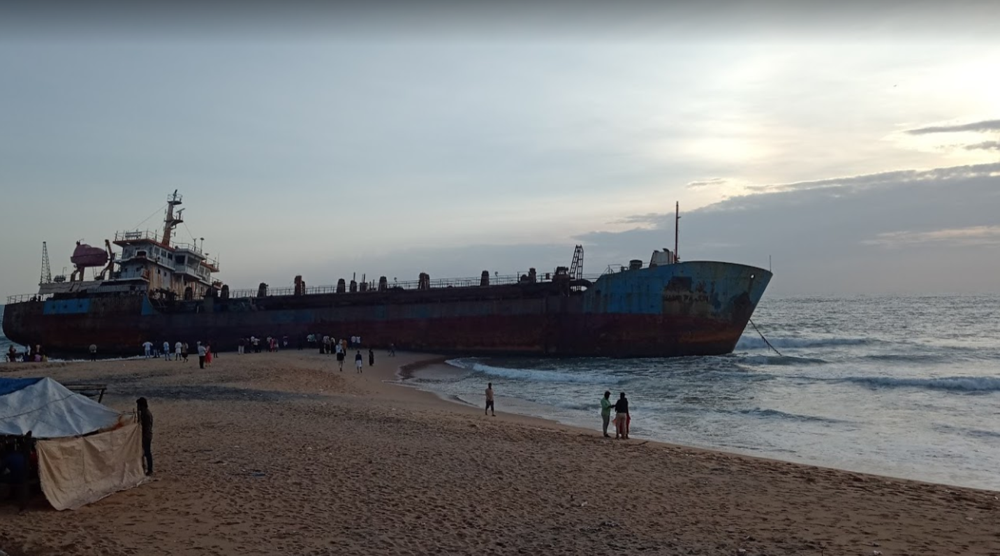

Kollam
Kollam district (formerly Quilon) is one of 14 districts of the state of Kerala, India. The district has a cross-section of Kerala's natural attributes; it is endowed with a long coastline, a major Laccadive Sea seaport and an inland lake (Ashtamudi Lake). The district has many water bodies. Kallada River is one among them, and the east side land of river is East Kallada and the west side land is West Kallada. Kallada Boat race is one of the famous festival events of the district. Even though it is a competition between two land sides of the river, many boat clubs from various places, even beyond the district participate in the event. Kollam is the capital of Kerala's cashew industry. Plains, mountains, lakes, lagoons, and backwaters, forests, farmland and rivers make up the topography of the district. The area had trading relationships with Phoenicia and Ancient Rome.
Munroe Island

Munroe Island is an inland island group located at the confluence of Ashtamudi Lake and the Kallada River, in Kollam district, Kerala, South India. It is a group of eight small islets comprising a total area of about 13.4 km2. The island, accessible by road, rail and inland water navigation, is about 25 kilometres (16 mi) from Kollam by road, 38 kilometres (24 mi) north from Paravur, 12 kilometres (7.5 mi) west from Kundara and about 25 kilometres (16 mi) from Karunagapally. As of the 2011 Indian census, the administrative village of Mundrothuruth (which includes nearby small villages as well) has a total population of 9599, consisting of 4636 males and 4963 females.
Kollam Beach
Kollam Beach, also known as Mahatma Gandhi Beach, is a beach at Kollam city in the Indian state of Kerala. Kollam Beach is the first 'Beach Wedding Destination' in Kerala. The beach also features a park of international standard, the Mahatma Gandhi Park, which was inaugurated on 1 January 1961 by the then Vice President of India, Zakir Hussain. Kollam beach is one among the few beaches in Kerala with a lifeguard outpost. Lifeguards were stationed at the beach from 2005. As of July 2015 Kovalam, Kollam is one among the three beaches in south Kerala with lifeguard outposts. Kollam Port is one of the oldest and most important ports for the international cashew trade on the Malabar Coast of the Arabian Sea. As of 2010, Kollam Port was the second largest port in Kerala after Cochin Port. Kollam was once a favourite settlement of the Portuguese, the Dutch and the English in succession before Independence. The port is protected by the Tangasseri Breakwater, extending about 1.1 miles (1.8 km) south-south east of Tangasseri Point. The exotic location and backwaters makes Kollam Beach one of Kerala's most popular tourist attractions.